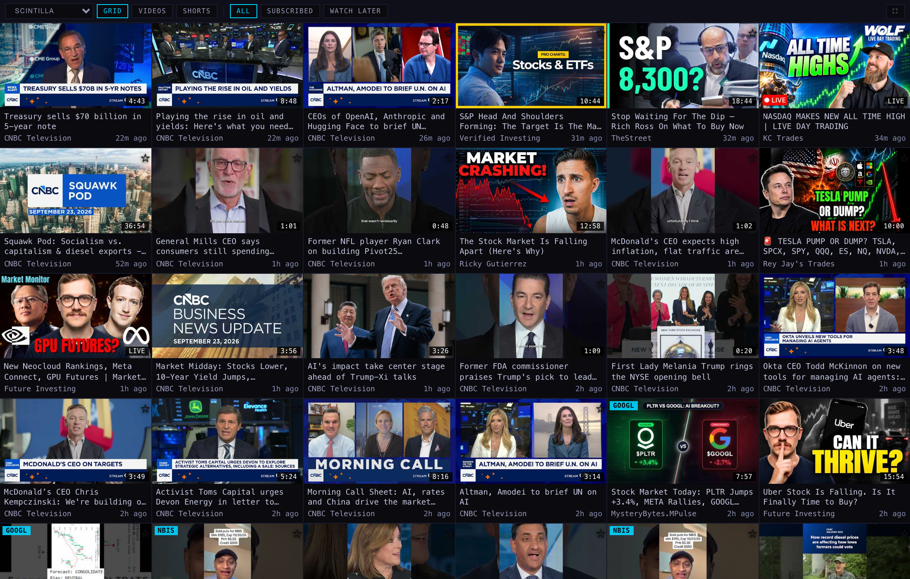
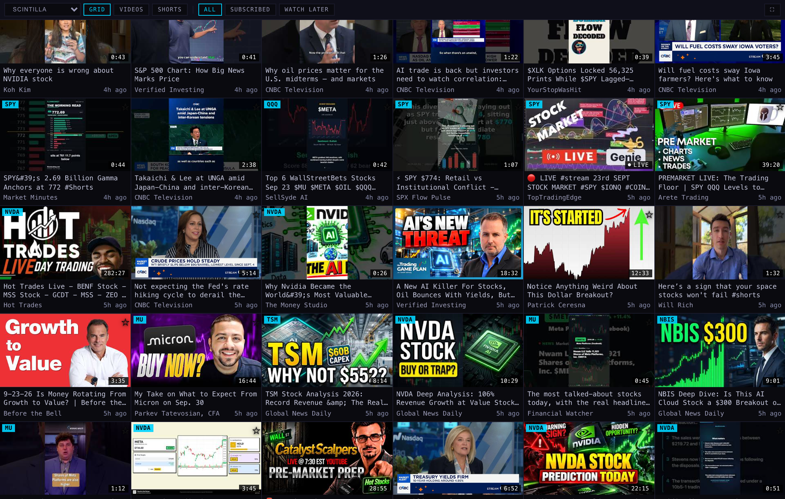
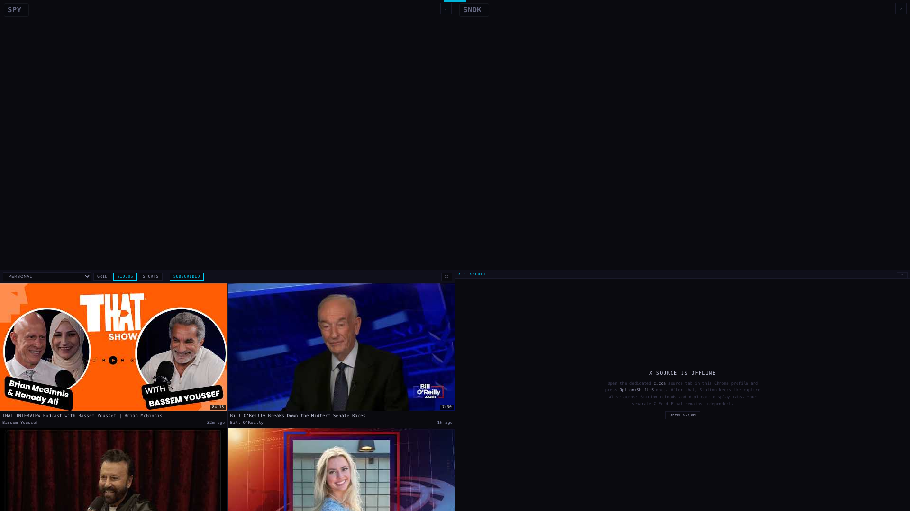

Alan, 23 September, 14:20: "Verified Investing… a video that was streamed live four hours ago… There's a Verified Investing live going on right now. The SCINTILLA videos grid does not show them. It shows GPU futures live from Future Investing. That one is coming through."
agent/youtube-live-20260923. Nothing deployed, nothing pushed, and the migration is written but not applied.I read the live rows myself. Both videos Alan named were in youtube_videos, tagged to the SCINTILLA account, with no length recorded:
| video | the date the feed gave it | when it really went on air | off by |
|---|---|---|---|
| A New AI Killer For Stocks, Oil Bounces With Yields… lS4LtT8LZcY | 22 Sep 18:45Z | 23 Sep 13:00Z (09:00 New York) | 18h 15m |
| Bitcoin WARNING: Fed's Latest Move CRUSHING BTC f7JOaa_BJfs | 22 Sep 18:47Z | 23 Sep 17:30Z (13:30 New York) | 22h 43m |
| New Neocloud Rankings, Meta Connect, GPU Futures rxvVxxBwJTc — the one that was coming through | 23 Sep 16:39Z | 23 Sep 17:00Z (still on air) | 21m |
That last row is the whole explanation. Future Investing's stream was published 21 minutes before it started, so its scheduled date and its real date are nearly the same and it sorted where Alan expected. Verified Investing schedules the day before, so its streams carried yesterday's date. 242 rows in the feed hold a newer publish time than those two, and the grid asks for 200 rows at a time — so they were not on the page Alan was looking at. Counted with count(*) on the live table, not an estimate.
A second, quieter fault: a stream that had not started yet was thrown away on the way in — the sweep dropped anything marked "upcoming" and never looked at it again. And a row was only ever written once, so a stream caught while it was scheduled kept that date for ever, and a finished stream never got the length it ran for.
| before | after | |
|---|---|---|
| what the collector asks YouTube | length, language, and whether it is live | the same, plus when the stream started, when it ended, and when it is scheduled (liveStreamingDetails) |
| a stream that has not started yet | dropped, never stored | kept; its tile shows the start time |
| a row already stored | never looked at again | recent rows that are still moving — on air, still to come, or with no length yet — are re-asked about on every pass (3 days back, at most 200 rows) |
| what the grid sorts by | the publish date | when it actually started; the scheduled time for something still to come; the publish date for an ordinary video |
| the corner of the tile | a length, or the word LIVE for anything with no length yet | ● LIVE only while it is genuinely on air; the start time while it is still to come; the length it ran for once it is over |
| how old a stream looks | counted from the scheduled date — "yesterday" | counted from when it went on air — "5h ago" |
Real Chromium on the MacBook, the real shell, and the real 400 rows from the live database. The only thing I supplied was the answer the database will give after the change — built from the live rows plus each stream's real start time read from its own public YouTube page. Nothing was written anywhere.

Where the two streams land. "Bitcoin WARNING" moves from nowhere on the page to tile 8, reading 1h ago with the 17:26 it ran for. "A New AI Killer" moves to tile 58, reading 5h ago — which is what Alan said when he looked: streamed live four hours ago.

The "still to come" tile is the one picture here that is not a live row: the old collector threw upcoming streams away, so the database holds none to photograph. It is the same shell rendering one supplied row, and the title says so on the tile. Real ones appear as soon as the collector is deployed.
The database change and the two shells can land in either order.
| file | what |
|---|---|
supabase/migrations/20260923_youtube_live_streams.sql | written, not applied. Five columns on youtube_videos, two indexes, and youtube_feed gaining feed_at, live_state, started_at, starts_at, ended_at |
supabase/functions/yt-rss-sweep/index.ts | asks for liveStreamingDetails on every pass, keeps upcoming streams, and re-asks about recent rows that are still moving. Not deployed. |
station-shells/scintilla-video-v1/index.htmlstation-shells/personal-video-v1/index.html | ordered by when the stream happened, the LIVE and start-time badges, the age counted from the start, and the fallback. The two files stay byte-identical — checked, not assumed. |
tests/station-youtube-live.test.mjs | 15 new tests, all passing |
tests/station-youtube-age.test.mjs, station-video-layout.test.mjs, station-video-profiles.test.mjs | three existing tests pinned the old wording exactly; each updated to the new wording, keeping what it was protecting |
Tests. 428 tests, 410 pass, 18 fail — the same 18 that already fail on production 9a7371e, checked by running the suite in a clean copy of production and comparing the two lists. No failure is mine.
9a7371e, three commits past the ff7ab7d named in the brief — the video-pane commits from earlier today are underneath it.personal-video-v1 in the bottom-left at 960×509 beside X — the twin that carries the change.